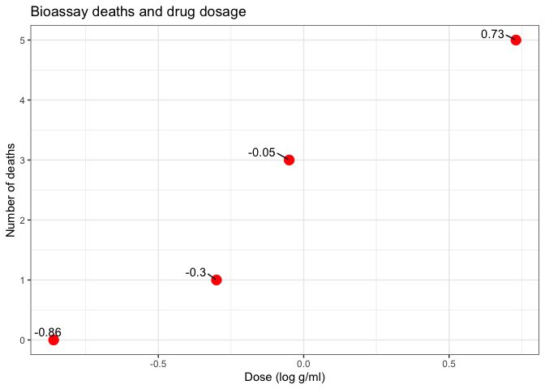
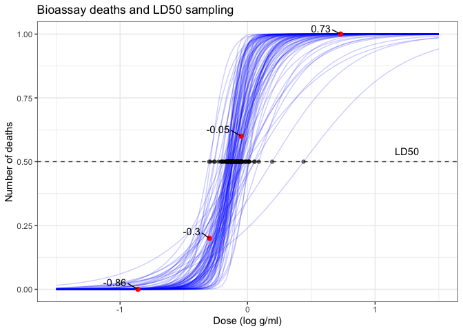
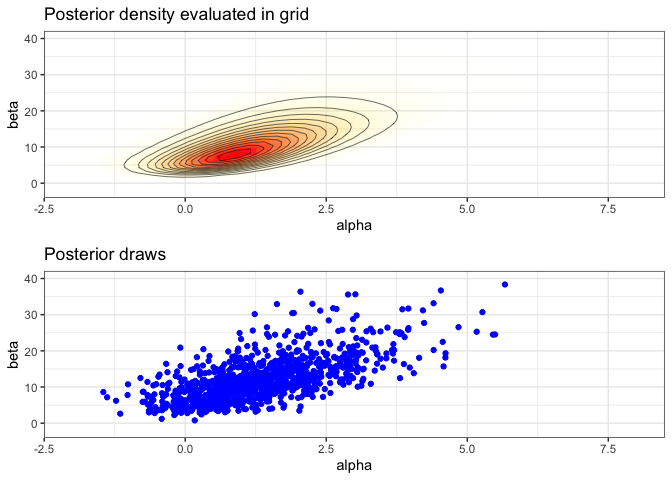
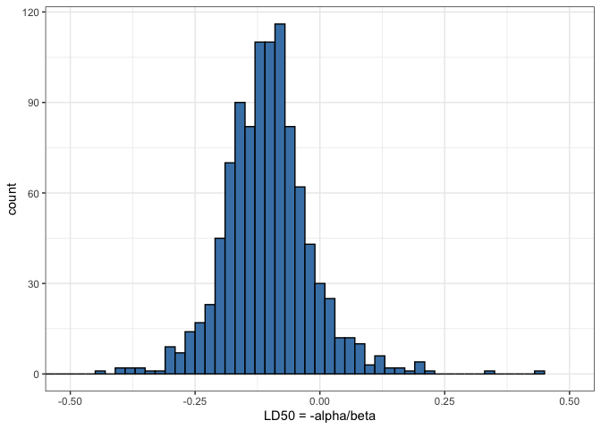

Bayesian: Multiparameter binomial regression and grid sampling for bioassay data
Last update:
## [1] "2024-12-04"
This doc was built with: rmarkdown::render("bayesian_demo3_6.Rmd", output_file = "../pages/bayesian_multiparameter_bioassay.md")
This example is described in the textbook: Bayesian Data Analysis, by Andrew Gelman, John Carlin, Hal Stern, David Dunson, Aki Vehtari, and Donald Rubin. Third edition, (BDA3), http://www.stat.columbia.edu/~gelman/book/, chapter 3.7 (BDA3 p. 74-). The code is based on a version by Aki Vehtari.
library(ggplot2); theme_set(theme_bw())
library(gridExtra)
library(tidyr)
library(dplyr)
library(purrr)
Introduction
This document explores the Bayesian approach for analysing bioassay data, focusing on estimating the toxicity of chemical compounds through a two-parameter logistic regression model. This analysis typifies non-conjugate scenarios in multiparameter problems where exact solutions are impractical, using a discretised approximation for the posterior distribution.
The Bayesian approach enhances LD50 estimation, the key toxicological benchmark indicating a 50% fatality risk. Unlike traditional methods that rely on single-point estimates, this method employs a probabilistic framework, yielding a detailed distribution of potential outcomes. This not only provides a more nuanced understanding of toxicity but also aids regulatory bodies in establishing more precise and dependable safety thresholds.
The scientific problem and the data
Bioassay experiments are crucial in determining the lethal dosage of drugs and chemicals. The data structure for such experiments involves dose-response information where each observation unit corresponds to a different dose level administered to groups of subjects, recording the number of fatalities.
Data overview
- x = dose_level (drug)
- n = n_animals (subjects)
- y = n_deaths (bad outcomes)
df1 <- data.frame(
x = c(-0.86, -0.30, -0.05, 0.73),
n = c(5, 5, 5, 5),
y = c(0, 1, 3, 5)
)
print(df1)
## x n y
## 1 -0.86 5 0
## 2 -0.30 5 1
## 3 -0.05 5 3
## 4 0.73 5 5
Plot data
ggplot(df1, aes(x=x, y=y)) +
geom_point(size=4, color='red') +
ggrepel::geom_text_repel(aes(label=x), vjust=-0.5, hjust=1.5, color='black') +
labs(title = 'Bioassay deaths and drug dosage', x = 'Dose (log g/ml)', y = 'Number of deaths')

Model specification
The responses within each dose group are modelled as binomially distributed, reflecting the probabilistic nature of the observed outcomes. Each response probability, \(\theta_i\), depends on the dose, reinforcing the assumption that the likelihood of a positive outcome follows a binomial distribution conditioned on the dose level and response probability.
Modeling the dose–response relation
In this analysis, we model the dose-response relationship using a logistic regression framework, which assumes that the log odds of death, \(\log\left(\frac{\theta_i}{1-\theta_i}\right)\), are linearly related to the dose levels. This approach allows the response probabilities to vary between 0 and 1, accommodating the binary nature of the outcomes (e.g., survival or death).
The relationship is defined mathematically as:
\[\text{logit}(\theta_i) = \alpha + \beta x_i\]where \(\theta_i\) is the probability of death given dose \(x_i\), and \(\alpha\) and \(\beta\) are parameters to be estimated.
Likelihood specification
The likelihood for each group \(i\) under the model is defined as follows:
\[p(y_i | \alpha, \beta, n_i, x_i) \propto [\text{logit}^{-1}(\alpha + \beta x_i)]^{y_i} [1 - \text{logit}^{-1}(\alpha + \beta x_i)]^{n_i - y_i}\]where \(y_i\) is the number of deaths among \(n_i\) subjects at dose level \(x_i\). This specification assumes that the outcomes within each group are independent and identically distributed, following a binomial distribution.
Prior distribution and independence assumptions
We adopt a noninformative prior distribution for the parameters, uniform over the parameter space, expressed as \(p(\alpha, \beta) \propto 1\). This choice reflects a lack of prior knowledge about the parameters and facilitates an objective analysis based primarily on the data.
Furthermore, the assumption of independence among the responses within each group supports the use of the binomial model. This assumption is reasonable unless there is evidence of interaction effects among subjects within the same dose group, such as contagion in the event of disease transmission.
Model justification and adjustments
Given that \(\alpha\) and \(\beta\) directly influence \(\theta_i\) through the logistic function, it is crucial that the model accounts for the bounded nature of probabilities. The logistic transformation ensures that the estimated probabilities remain within the [0,1] interval, regardless of the values taken by the linear combination \(\alpha + \beta x_i\).
This modeling framework effectively captures the systematic variation in death probabilities as a function of dose, providing a robust tool for analyzing bioassay data. The analysis includes fixing the sample sizes \(n_i\) and dose levels \(x_i\) as constants, focusing the inference solely on the parameters \(\alpha\) and \(\beta\).
By employing this structured approach, we can interpret the parameters’ effects on the probability of death and make informed decisions about safe dose levels based on the computed LD50, the dose at which the death probability is 50%.
Computational Setup for Bayesian Inference (grid for posterior computation)
Here, we set up a grid over the parameter space and calculate the posterior distribution across this grid. To perform Bayesian inference, we establish a grid over the logistic model parameters, systematically evaluating the posterior distribution across a spectrum of values. This grid approach is essential for approximating the posterior where analytical solutions are unattainable.
Compute the posterior density in grid.
- usually should be computed in logarithms!
- with alternative prior, check that range and spacing of A and B are sensible
A = seq(-4, 8, length.out = 50)
B = seq(-10, 40, length.out = 50)
Making vectors that contain all pairwise combinations of A and B
cA <- rep(A, each = length(B))
cB <- rep(B, length(A))
We define a helper function to calculate the log-likelihood, then apply it across our dataset to estimate the joint likelihood over the grid. This helper function will calculate the log likelihood given a dataframe with x, y, and n and evaluation points a and b. For the likelihood see BDA3 p. 75
log1p(x) computes log(x+1) in numerically more stable way.
logl <- function(df, a, b)
df['y']*(a + b*df['x']) - df['n']*log1p(exp(a + b*df['x']))
Calculating likelihood for each combination of parameters: apply logl function for each observation ie. each row of data frame of x, n and y
p <- apply(df1, 1, logl, cA, cB) %>%
# sum the log likelihoods of observations
# and exponentiate to get the joint likelihood
rowSums() %>% exp()
# Convert log-likelihoods to likelihoods and normalise to obtain posterior probabilities
Sampling from the posterior distribution
We approximate the Bayesian posterior by sampling from the grid, with each sample weighted by its likelihood. Adding random jitter to these samples enhances the continuity of our estimates, facilitating more robust inference from our discrete approximation.
We follow a detailed procedure to sample from the grid, ensuring that each step contributes to an accurate representation of the posterior distribution:
Compute Marginal Posterior Distributions: We start by calculating the marginal posterior distribution for \(\alpha\) by numerically summing over all possible values of \(\beta\) in the grid. This step aggregates the contributions of each \(\beta\) value to the probability of \(\alpha\), forming a comprehensive view of \(\alpha\)’s likelihood given the data.
Sampling Steps:
- For each of the 1000 iterations (s = 1 to 1000):
- a. Draw \(\alpha_s\): Sample \(\alpha\) values from the discretely computed marginal distribution \(p(\alpha | y)\). This sampling can be seen as a discrete analogue of the inverse cumulative distribution function (CDF) method, ensuring that our samples are drawn according to their computed probabilities.
- b. Draw \(\beta_s\): For each \(\alpha_s\) drawn, sample \(\beta_s\) from the conditional distribution \(p(\beta | \alpha, y)\), reflecting the dependency of \(\beta\) on the sampled values of \(\alpha\).
- c. Add Jitter: To each sampled pair \((\alpha_s, \beta_s)\), add a uniform random jitter centered at zero. The jitter width is set to half the spacing between grid points, smoothing the transition between discrete grid points and creating a more continuous distribution.
- For each of the 1000 iterations (s = 1 to 1000):
Sample from the grid (with replacement)
Sample from the grid, with replacement, (the posterior distribution) to approximate Bayesian estimates and adding jitter for plot continuity.
nsamp <- 1000
samp_indices <- sample(length(p), size = nsamp,
replace = T, prob = p/sum(p))
samp_A <- cA[samp_indices[1:nsamp]]
samp_B <- cB[samp_indices[1:nsamp]]
Add random jitter, see BDA3 p. 76
samp_A <- samp_A + runif(nsamp, (A[1] - A[2])/2, (A[2] - A[1])/2)
samp_B <- samp_B + runif(nsamp, (B[1] - B[2])/2, (B[2] - B[1])/2)
head(samp_A)
## [1] 1.8361911 0.5603304 0.6314775 1.2997661 1.9234143 0.1217990
head(samp_B)
## [1] 20.861506 9.061151 10.383111 10.018550 12.449213 8.442394
Analysing LD50 and its challenges
We create a dataframe for plots and visualising the logistic regression curves. This contains the sampled parameter values and corresponding LD50 calculations.
A critical measure in bioassay studies is the LD50, the dose level at which the probability of death is 50%. We compute this from the model parameters and address the interpretative challenges when the dose-response relationship might not be monotonically increasing, particularly when \(\beta \leq 0\).
samps <- data_frame(ind = 1:nsamp, alpha = samp_A, beta = samp_B) %>%
mutate(ld50 = - alpha/beta)
head(samps)
## # A tibble: 6 × 4
## ind alpha beta ld50
## <int> <dbl> <dbl> <dbl>
## 1 1 1.84 20.9 -0.0880
## 2 2 0.560 9.06 -0.0618
## 3 3 0.631 10.4 -0.0608
## 4 4 1.30 10.0 -0.130
## 5 5 1.92 12.4 -0.155
## 6 6 0.122 8.44 -0.0144
Plot draws of logistic curves
We compile various visualisations, including logistic regression curves and the distribution of LD50 estimates, to interpret the model’s effectiveness and the implications of the parameters. These visualisations underscore the variability and uncertainty in the parameter estimates, providing a comprehensive view of the Bayesian inference process.
invlogit <- plogis
xr <- seq(-1.5, 1.5, length.out = 100)
dff <- pmap_df(samps[1:100,], ~ data_frame(x = xr, id=..1,
f = invlogit(..2 + ..3*x)))
ppost <- ggplot(df1, aes(x=x, y=y/n)) +
geom_line(data=dff, aes(x=x, y=f, group=id), linetype=1, color='blue', alpha=0.2) +
geom_point(size=2, color='red') +
# scale_x_continuous(breaks = df1$x, minor_breaks=NULL, limits = c(-1.5, 1.5)) +
# scale_y_continuous(breaks = seq(0,1,length.out=3), minor_breaks=NULL) +
labs(title = 'Bioassay', x = 'Dose (log g/ml)', y = 'Proportion of deaths') +
ggrepel::geom_text_repel(aes(label=x), vjust=-0.5, hjust=1.5, color='black') +
labs(title = 'Bioassay deaths and LD50 sampling', x = 'Dose (log g/ml)', y = 'Number of deaths')
add 50% deaths line and LD50 dots
ppost + geom_hline(yintercept = 0.5, linetype = 'dashed', color = 'grey20') +
geom_point(data=samps[1:100,], aes(x=ld50, y=0.5), color='black', alpha=0.5) +
annotate(geom = "text", x = 1.25, y = 0.54, label = "LD50")

Create a plot of the posterior density
# limits for the plots
xl <- c(-2, 8)
yl <- c(-2, 40)
pos <- ggplot(data = data.frame(cA ,cB, p), aes(cA, cB)) +
geom_raster(aes(fill = p, alpha = p), interpolate = T) +
geom_contour(aes(z = p), colour = 'black', size = 0.2) +
coord_cartesian(xlim = xl, ylim = yl) +
labs(title = 'Posterior density evaluated in grid', x = 'alpha', y = 'beta') +
scale_fill_gradient(low = 'yellow', high = 'red', guide = F) +
scale_alpha(range = c(0, 1), guide = F)
Plot of the samples
sam <- ggplot(data = samps) +
geom_point(aes(alpha, beta), color = 'blue') +
coord_cartesian(xlim = xl, ylim = yl) +
labs(title = 'Posterior draws', x = 'alpha', y = 'beta')
Combine the plots
grid.arrange(pos, sam, nrow=2)

Plot of the histogram of LD50
his <- ggplot(data = samps) +
geom_histogram(aes(ld50), binwidth = 0.02,
fill = 'steelblue', color = 'black') +
coord_cartesian(xlim = c(-0.5, 0.5)) +
labs(x = 'LD50 = -alpha/beta')
his

Posterior summaries and decision making
Interpreting LD50 estimates
The LD50, or the dose at which there is a 50% chance of a fatal outcome, is a crucial metric in toxicology. It serves as a benchmark for regulatory bodies to set safe exposure levels. By computing LD50 from our Bayesian model, we provide a probabilistic assessment of toxicity, which is more informative than single-point estimates derived from frequentist methods.
In this analysis, LD50 values are derived from the distribution of the sampled parameters, alpha and beta. These parameters are estimated from the logistic regression model, reflecting how the probability of death changes with dosage. The variability in these estimates, illustrated in our histograms and scatter plots, reflects the uncertainty inherent in experimental data and model assumptions.
Decision making implications
The distribution of LD50 values aids regulatory decision-making by quantifying the risk associated with different dosage levels. Regulators can use this information to determine safe dosage limits, balancing efficacy against potential harm. For instance, if the posterior probability of LD50 being below a certain threshold is high, it may suggest that the drug can be considered relatively safe up to that threshold. Conversely, a wide spread in the LD50 estimates may indicate the need for additional studies or more conservative dosage recommendations.
Practical considerations
The Bayesian approach offers several advantages for decision-making: - Probabilistic nature: It provides a full probability distribution of outcomes, allowing for a nuanced understanding of risk. - Incorporation of prior information: Prior clinical data or expert opinion can be formally incorporated, enhancing the robustness of the inference. - Flexibility in model specifications: Bayesian models can be easily extended to include more complex relationships or hierarchical structures, which can be crucial for multi-phase trials.
Regulatory and ethical considerations
Regulatory decisions based on LD50 estimates must also consider ethical implications, especially in terms of acceptable risk levels. The Bayesian framework’s flexibility allows for the explicit inclusion of ethical considerations into the model, such as different weights to outcomes based on severity.
This comprehensive approach ensures that drug approval and dosage recommendations are based on a thorough understanding of both statistical evidence and practical implications, leading to safer and more effective therapeutic interventions.